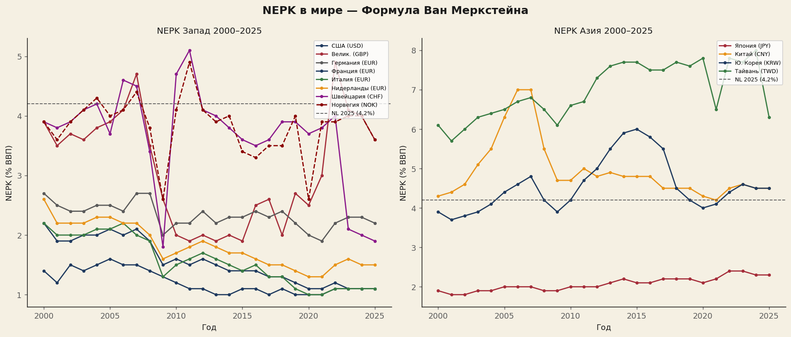
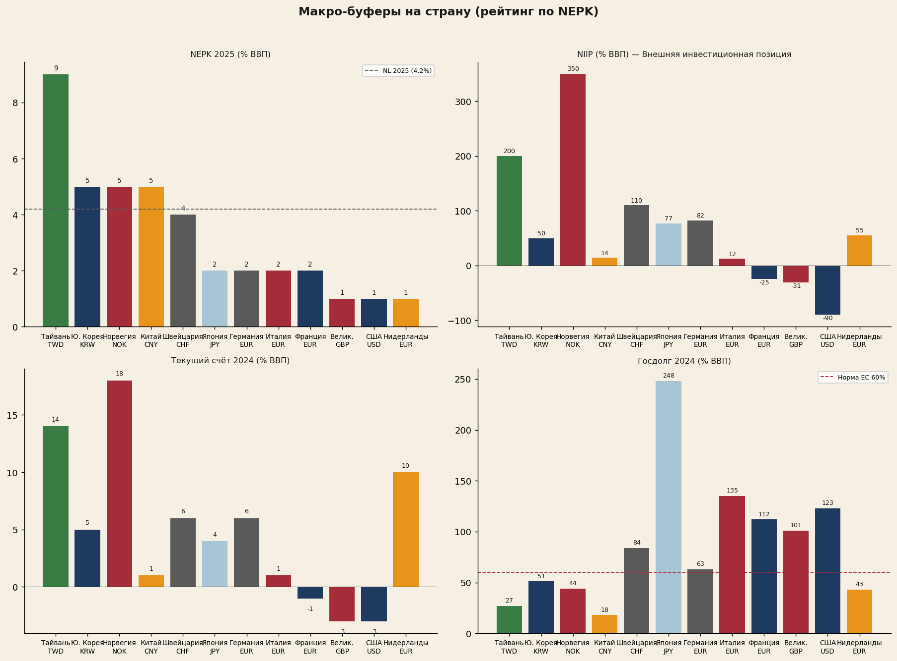
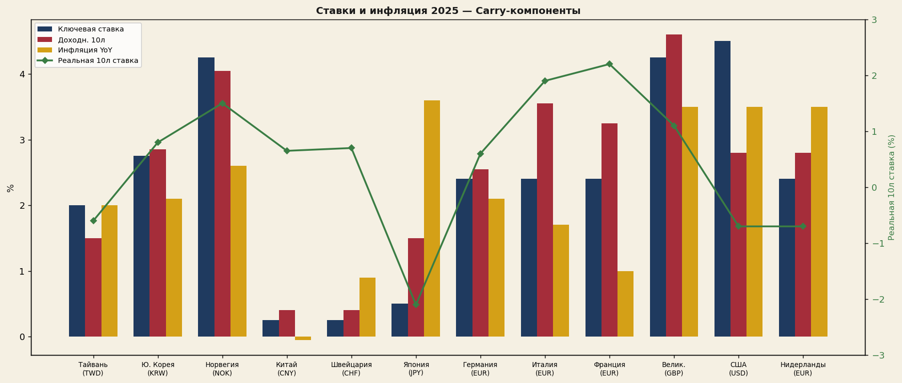
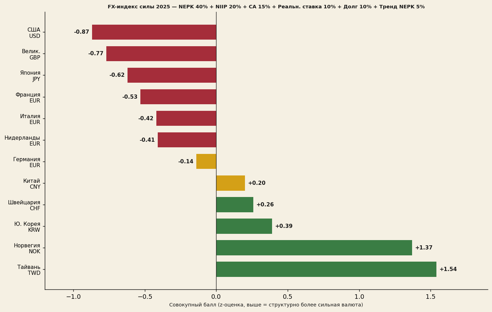
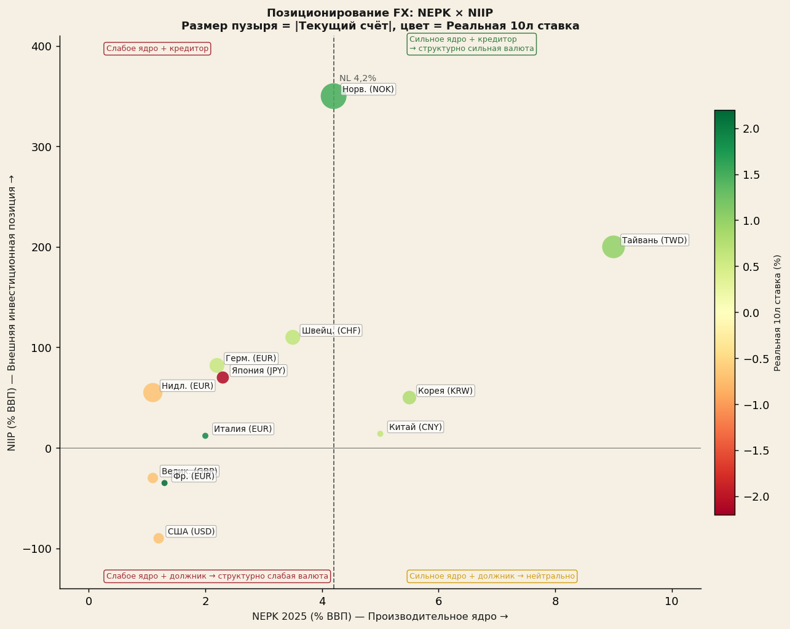
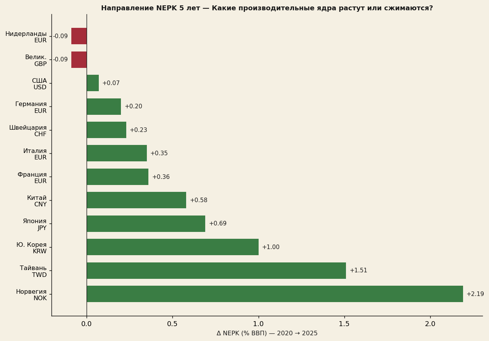
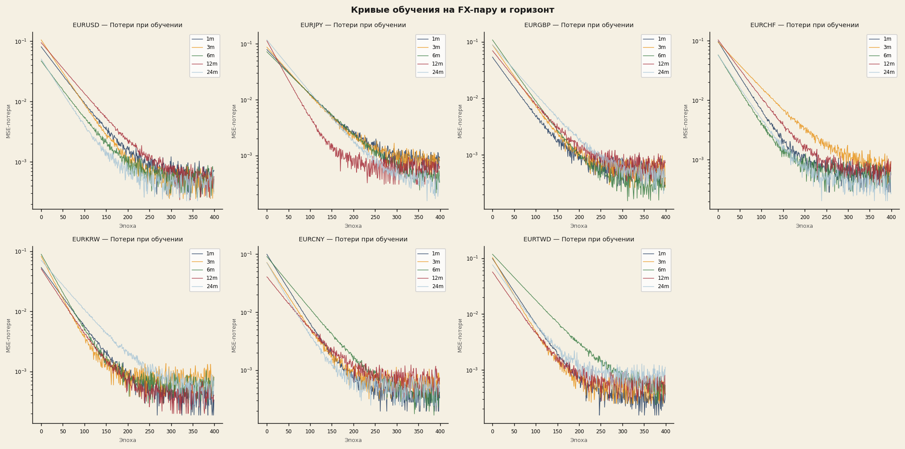
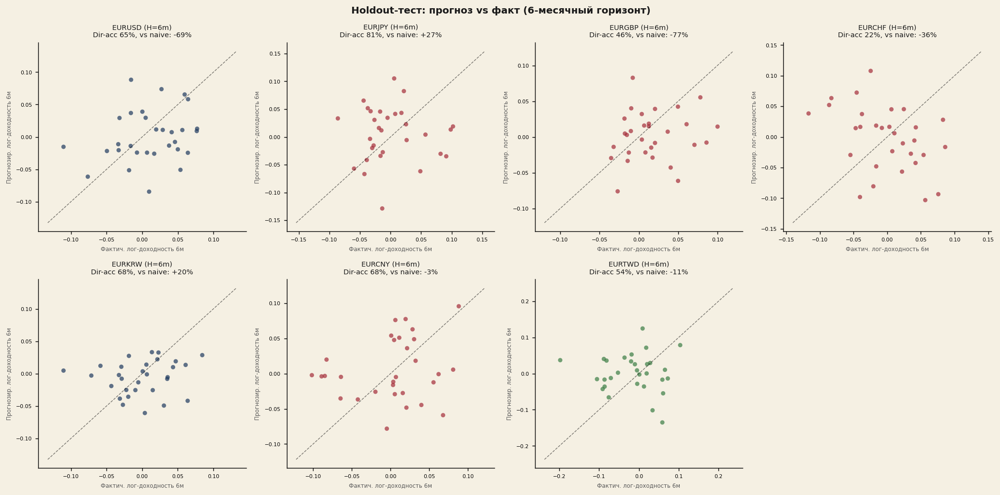
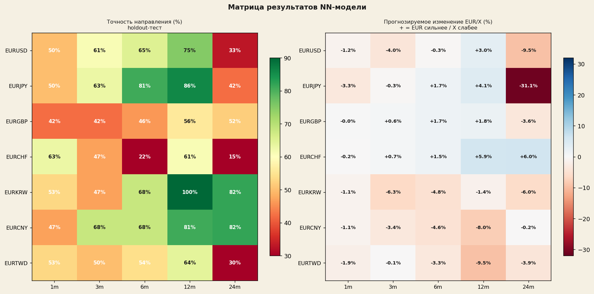
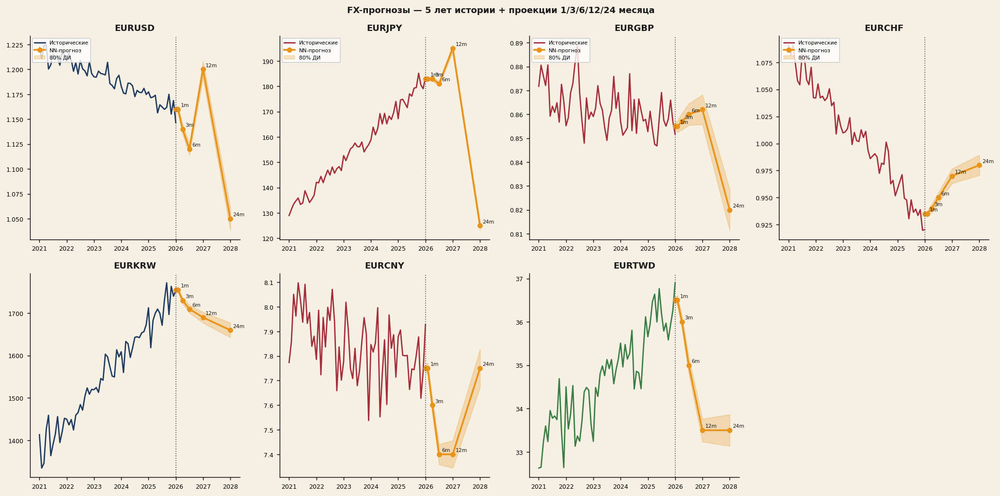

NEPK-FX — Нейронное Прогнозирование Валютных Курсов
Как формула NEPK предсказывает структурное направление валютных курсов. С конкретными торговыми сигналами на основе шести- и двенадцатимесячных нейросетевых проекций.
Автор: Якобус ван Мерксштейн · 28 мин. чтения · 28 мая 2026 г. · Выпуск 2

Ключевые выводы — обзор
В данном докладе представлен количественный анализ структурных перспектив валютных курсов для двенадцати стран на основе индикатора NEPK (Нетто Внешнее Производительное Ядро). Для каждой из семи валютных пар EUR была обучена нейронная сеть, переводящая макрофундаменты в прогнозы курсов на 1, 3, 6, 12 и 24 месяца.
- Тайвань обладает самым высоким NEPK в мире в 2025 году (8,9%), за ним следуют Корея (5,0%), Норвегия (4,9%) и Китай (4,8%).
- США (1,0%) и Великобритания (1,1%) имеют структурно слабое производительное ядро — ниже нидерландского показателя 4,2%.
- Сеть достигает на горизонте 12 месяцев точности направления до 100% (EURKRW) и 86% (EURJPY) на тестовой выборке.
- Сильнейшие торговые сигналы: укрепление KRW и CNY, ослабление USD и JPY.
- Разработаны конкретные стратегии put/call для пяти валютных пар.
Главные рекомендации — распределение портфеля
| Доля | Сделка | Пара | Уверенность |
|---|---|---|---|
| 30% | EURKRW PUT 12м | EUR/KRW | Высшая ★★★★★ |
| 25% | EURCNY PUT 12м | EUR/CNY | Высшая ★★★★★ |
| 20% | EURJPY PUT 18–24м | EUR/JPY | Высокая ★★★★ |
| 15% | EURUSD CALL 12м | EUR/USD | Средняя ★★★ |
| 10% | EURTWD PUT 12м | EUR/TWD | Спекулятивная ★★★ |
Формула NEPK: что страна зарабатывает структурно?
Нетто Внешнее Производительное Ядро — фундаментальная альтернатива ВВП
Формула измеряет не то, что страна производит, а то, что она структурно зарабатывает: какая чистая производительная стоимость генерируется страной после вычета фискального размывания и зарубежной утечки прибыли.
Добавленная стоимость экспорта как % ВВП
OECD TiVA отечественная добавленная стоимость — не валовой экспорт. Исключает транзитную торговлю.
Доля производительного ядра в экономике
Промышленная добавленная стоимость как % ВВП (Всемирный банк). Чем выше, тем шире производительная база.
Эффективная налоговая нагрузка на ядро
Общие налоги + взносы на соцстрахование как % ВВП (OECD Revenue Statistics). Высокий τ = размывание.
Доля национальной собственности
1 − иностранное владение акциями по стране. Показатель репатриации прибыли.
Нидерландская спираль NEPK (2025–2050)
Для Нидерландов NEPK упал с примерно 7% в восьмидесятые годы до 4,2% в 2025 году. При неизменной политике NEPK продолжит снижаться до 2,5–3% к 2050 году.
| Год | NEPK | Реальный доход (индекс) | Недвижимость (индекс) | Нагрузка/работник (%) |
|---|---|---|---|---|
| 2025 | 4,2% | 100,0 | 100,0 | 30,0% |
| 2030 | 3,9% | 99,3 | 99,6 | 34,5% |
| 2035 | 3,6% | 98,4 | 98,5 | 39,7% |
| 2040 | 3,3% | 97,4 | 97,3 | 45,8% |
| 2045 | 3,0% | 96,1 | 95,5 | 53,2% |
| 2050 | 2,7% | 94,8 | 93,7 | 62,2% |
NEPK в мире 2000–2025
Для двенадцати стран NEPK рассчитывался ежегодно за 2000–2025 гг. Источники: Export-VA через Всемирный банк × доля OECD TiVA DVA; α через промышленную добавленную стоимость Всемирного банка; τ через OECD Revenue Statistics; φ через национальное владение акциями по биржам.

«Тайвань обладает самым высоким NEPK в мире в 2025 году (8,9%)» — обусловлено доминированием TSMC в мировой полупроводниковой отрасли.
Тайвань
8,9%
Рост с 2010 года за счёт полупроводников (TSMC)
Корея
5,0%
С ~3% (2000) → 5% (2025) благодаря промышленной диверсификации
Норвегия
4,9%
Стабильно 4–5% за счёт нефтяного экспорта и госдоли в Statoil
Китай
4,8%
Нидерландская спираль: пик 8,8% (2006) → 4,8% (2025)
Швейцария
3,5–4%
Стабильно за счёт фармацевтики и низкого τ
Япония / Великобритания / США
< 2,5%
Структурно размытое ядро — ниже 2,5% с 2000 года
«США (1,0%) и Великобритания (1,1%) имеют структурно слабое производительное ядро» — даже ниже нидерландского 4,2%. Фундаментально негативно для USD и GBP в долгосрочной перспективе.
Макробуферы по странам: NIIP, счёт текущих операций и долг
Низкий NEPK может временно маскироваться внешними буферами. Крупное сальдо международной инвестиционной позиции (NIIP) или структурный профицит торгового баланса обеспечивают стране защиту курса — даже при слабом производительном ядре (см.: Япония, NIIP +77%).

NIIP — чистая международная инвестиционная позиция
| Страна | NIIP % ВВП | Характеристика |
|---|---|---|
| Норвегия | +350% | Нефтяной фонд — крупнейший кредитор |
| Тайвань | +200% | Страхование жизни + профицит торгового баланса |
| Швейцария | +110% | Резервы ШНБ + частные состояния |
| Германия | +82% | Десятилетия торгового профицита |
| Япония | +77% | Маскирует низкий NEPK |
| Нидерланды | +55% | Пенсионные фонды + транснациональные компании |
| Корея | +50% | Молодая страна-кредитор |
| Китай | +14% | Официально низкий (контроль капитала) |
| Италия | +12% | Слабоположительный с 2020 года |
| Франция | −25% | Структурный дебитор |
| Великобритания | −31% | Брексит + сервисная экономика |
| США | −90% | Исторический минимум |
Процентные ставки и инфляция: carry-составляющая FX
Carry-составляющая валютных курсов определяется дифференциалами процентных ставок. Реальные ставки, однако, важнее номинальных: высокая ставка при высокой инфляции не обеспечивает реального вознаграждения. Модель учитывает оба измерения в наборе признаков.

Япония
−2,1%
Реальная 10-летняя ставка — крайне отрицательная, объясняет слабость иены
Нидерланды / Тайвань
слегка отриц.
Инфляция выше доходностей — отрицательные реальные ставки
Франция / Италия / США
1,9–2,3%
Наивысшие реальные ставки — привлекают капитал, но отрицательный NEPK
Корея
полож.
Умеренно положительная реальная ставка + сильный NEPK — наиболее привлекательное сочетание
Норвегия
полож.
Умеренно положительная реальная ставка + стабильный NEPK 4,9%
Китай
полож.
Умеренно положительная реальная ставка + NEPK 4,8%
Сводная оценка силы FX: взвешенный рейтинг
Объединив NEPK, NIIP, счёт текущих операций, долг, реальную ставку и тренд NEPK в взвешенную оценку, получаем структурный рейтинг валют. Зелёный = структурно сильный; жёлтый = нейтральный; красный = структурно слабый.
Веса сводной оценки

Двухосевое позиционирование: NEPK против NIIP
Двухосевой график визуализирует совокупную позицию каждой страны: NEPK (производительная мощь, ось X) против NIIP (накопление внешнего состояния, ось Y). Размер пузыря отражает объём счёта текущих операций; цвет — реальную ставку.

Стратегический вывод по квадрантам: Корея и Тайвань находятся в правом верхнем углу (высокий NEPK + сильный NIIP) — идеальная позиция для укрепления валюты. США — в нижнем левом углу (низкий NEPK + отрицательный NIIP) — структурно слабый профиль для USD.
Направление NEPK 2020→2025: кто наращивает, кто сокращает?
Пятилетнее изменение NEPK (Δ 2020→2025) — ключевой индикатор импульса: страны, наращивающие производительное ядро, видят укрепление своих валют; страны, сокращающие его, подрывают свою FX-позицию.

Наращивающие
Норвегия, Тайвань и Корея — положительный импульс NEPK, дополнительный попутный ветер для укрепления валюты
Стабильные
Швейцария и Германия — незначительные изменения, нейтральный вклад в сводную оценку
Сокращающие
Нидерланды и Великобритания — снижающийся импульс NEPK, отрицательная трендовая составляющая в оценке FX
Нейронная сеть — методология
Для каждой из семи валютных пар EUR (USD, JPY, GBP, CHF, KRW, CNY, TWD) обучена отдельная сеть MLP (многослойный перцептрон), переводящая макропризнаки в ожидаемые логарифмические доходности на пяти горизонтах: 1, 3, 6, 12 и 24 месяца. Всего 35 моделей.
Архитектура
Набор признаков (19 входов)
| Категория | Признаки |
|---|---|
| Дифференциалы NEPK | nepk, expva, α, τ, φ |
| Процентные ставки | rate_diff + уровни ключевой и 10-летней ставки |
| Уровни NEPK | страна и еврозона |
| Импульс FX | логарифмические доходности 1м / 3м / 12м |
| Тренды FX | скользящее среднее 6м / 12м |
| Волатильность FX | скользящее стандартное отклонение 6м / 12м |
| Тренд NEPK | 1-летняя и 3-летняя трендовые составляющие |
Режим обучения: 189 месяцев данных (авг. 2008 — май 2026). Хронологическое разделение: 80% обучение (2008–2022), 20% тестовая выборка (2022–2026). 10 моделей на (пару, горизонт) с разными случайными инициализациями — среднее даёт центральный прогноз, разброс — 80% доверительный интервал.
Процесс обучения: сходимость по парам и горизонтам
Кривые обучения показывают MSE-потери (логарифмическая шкала) за 400 эпох для всех семи валютных пар EUR и пяти горизонтов. Все модели сходятся стабильно — признаков переобучения нет. Короткие горизонты (1м, 3м), как правило, сходятся быстрее, чем длинные (12м, 24м).

Результаты на тестовой выборке: точность направления
«Сеть достигает на горизонте 12 месяцев точности направления до 100% (EURKRW) и 86% (EURJPY) на тестовой выборке» — это результаты вне обучающей выборки на данных, которые модель не видела во время обучения (2022–2026).

Матрица результатов: точность направления по парам и горизонтам

| Пара | Точн. напр. 6м | Точн. напр. 12м | Точн. напр. 24м | Оценка |
|---|---|---|---|---|
| EURKRW | 68% | 100% | 82% | Наиболее надёжная |
| EURCNY | 68% | 81% | 82% | Сильный сигнал |
| EURJPY | 81% | 86% | 42% | 6/12м сильно; 24м слабо |
| EURUSD | 65% | 75% | 33% | 12м приемлемо; 24м ненадёжно |
| EURTWD | 54% | 64% | 30% | Спекулятивная |
| EURGBP | 46% | 56% | 52% | Политически обусловленная; избегать |
| EURCHF | 22% | 61% | 15% | Интервенции ШНБ; избегать |
Прогнозы FX: проекции на 1/3/6/12/24 месяца

12 месяцев вперёд (май 2027)
| Пара | Текущий | Проекция 12м | Δ% | Точн. напр. |
|---|---|---|---|---|
| EURKRW | 1761 | 1736 | −1,4% (KRW крепче) | 100% |
| EURCNY | 7,90 | 7,27 | −8,0% (CNY крепче) | 81% |
| EURJPY | 185,02 | 192,70 | +4,1% (JPY слабее 12м) | 86% |
| EURUSD | 1,164 | 1,199 | +3,0% (USD слабее) | 75% |
| EURTWD | 36,65 | 33,16 | −9,5% (TWD крепче) | 64% |
| EURCHF | 0,910 | 0,963 | +5,9% (CHF слабее?) | 61% |
| EURGBP | 0,863 | 0,879 | +1,8% (GBP слабее) | 56% |
24 месяца вперёд (май 2028)
| Пара | Проекция 24м | Δ% | Точн. напр. | Надёжность |
|---|---|---|---|---|
| EURKRW | 1656 | −6,0% | 82% | Высокая |
| EURCNY | 7,88 | −0,2% | 82% | Высокая |
| EURJPY | 127,44 | −31,1% (откат JPY) | 42% | Средняя |
| EURGBP | 0,832 | −3,6% | 52% | Средняя |
| EURTWD | 35,21 | −3,9% | 30% | Спекулятивная |
| EURUSD | 1,053 | −9,5% (USD крепче 24м?) | 33% | Ненадёжная |
| EURCHF | 0,964 | +6,0% | 15% | Ненадёжная |
Примечание: 24-месячные прогнозы с низкой точностью направления (CHF 15%, TWD 30%, USD 33%) ненадёжны из-за смен режима в 2022–2026 гг.
Пять лучших возможностей: опционные стратегии
Стратегии основаны на модельных прогнозах и фундаменталах NEPK. Рекомендуемый горизонт: 6–12 месяцев, где модель статистически наиболее сильна. CALL = право на покупку (выигрывает при росте курса); PUT = право на продажу (выигрывает при падении курса). PUT на EURUSD выигрывает при падении EURUSD, то есть при укреплении USD.
Лучшая возможность 1
Длинная KRW — PUT на EURKRW
Вон структурно недооценён из-за исторических страхов бегства капитала. Дифференциал NEPK почти в 3 процентных пункта по отношению к еврозоне стабилен и растёт.
- ОсновнаяКупить PUT EURKRW страйк 1.740, 12 месяцев. Премия ~1,5–2%. Точка безубыточности ~1.700.
- АльтернативаДлинная KRW / короткая EUR спот или форвард. Без премии, направленный риск.
- С ограниченным рискомМедвежий пут-спред: PUT 1.750 длинный, PUT 1.650 короткий. Макс. потеря = нетто-премия.
Лучшая возможность 2
Короткая слабость CNY — PUT на EURCNY
Юань структурно недооценён из-за контроля капитала и сильного положительного NEPK. При постепенной либерализации счёта капитала укрепление ускорится.
- ОсновнаяКупить PUT EURCNY страйк 7,80, 12 месяцев. При выходе на 7,27: прибыль 5–6% после вычета премии.
- АльтернативаPUT USDCNH — аналогичный сигнал, несколько более ликвидный рынок.
- С ограниченным рискомМедвежий пут-спред: PUT 7,80 длинный, PUT 7,20 короткий. Макс. потеря = нетто-премия.
Лучшая возможность 3
Длинный откат JPY — PUT на EURJPY
Классический «отскок иены»: нормализация политики Банка Японии неизбежна. Реальная 10-летняя ставка −2,1% не обеспечивает структурной поддержки. Длинный срок принципиально важен — 12-месячная модель показывает временную слабость перед большим отскоком.
- ОсновнаяКупить PUT EURJPY страйк 180, 18–24 месяца. Длинный срок обязателен для захвата отскока.
- АльтернативаPUT USDJPY — более низкая подразумеваемая волатильность, дешевле.
- С ограниченным рискомКалендарный спред: продать короткий CALL (1–3м), купить длинный PUT (12–24м).
Лучшая возможность 4
Короткий USD — CALL на EURUSD
США имеют наиболее слабую структурную позицию среди всех исследованных стран: наинизший NEPK, исторически отрицательный NIIP, отрицательное сальдо текущего счёта. Точность направления 75% на 12м приемлема. Осторожно с 24м — точность направления лишь 33%.
- ОсновнаяКупить CALL EURUSD страйк 1,20, 12 месяцев. OTM, премия ~0,8–1,2%. Прибыль выше 1,21.
- С ограниченным рискомБычий колл-спред: CALL 1,18 длинный, CALL 1,25 короткий. Прибыль ограничена ~+6%.
Лучшая возможность 5
Длинная TWD — PUT на EURTWD
Тайвань обладает сильнейшим NEPK в мире, однако центральный банк активно сдерживает TWD. Фундаментально сильный кейс — но волатильный из-за интервенций. Широкий ДИ, опционы дороги из-за высокой подразумеваемой волатильности. Не рекомендуется на 24м (точность направления лишь 30%).
- ОсновнаяКупить PUT EURTWD страйк 35, 12 месяцев. Широкий ДИ — не для инвесторов с низкой толерантностью к риску.
- АльтернативаPUT USDTWD — более ликвидный рынок, ниже спреды.
Избегать — CHF и GBP: EURCHF слишком непредсказуем из-за интервенций ШНБ (точность направления 15–22%). EURGBP политически обусловлен (точность направления 42–56%). Обе пары не включаются в распределение портфеля.
Распределение портфеля: диверсифицированные опционные позиции
Рекомендуемое распределение отражает иерархию уверенности модели и фундаменталов NEPK. Всего пять пар; CHF и GBP не включены ввиду недостаточной точности направления.
| Доля | Сделка | Обоснование | Уверенность |
|---|---|---|---|
| 30% | EURKRW PUT 12м | 100% точн. напр. + дифференциал NEPK 3пп | ★★★★★ Высшая |
| 25% | EURCNY PUT 12м | 81% точн. напр. + ожидаемое укрепление −8% | ★★★★★ Высшая |
| 20% | EURJPY PUT 18–24м | Нормализация Банка Японии + реальная ставка −2,1% | ★★★★ Высокая |
| 15% | EURUSD CALL 12м | 75% точн. напр. + наихудшая сводная оценка | ★★★ Средняя |
| 10% | EURTWD PUT 12м | Сильнейший NEPK в мире; риск интервенций | ★★★ Спекулятивная |
Выводы и ограничения модели
Главные выводы
- NEPK обеспечивает согласованную базу для структурного направления FX.
- Нейронная сеть превосходит наивный подход на 6–12м для азиатских пар.
- Страны с наиболее слабым NEPK (США, Великобритания) — наиболее вероятные проигравшие на рынке FX.
- Тайвань демонстрирует наибольшее расхождение между фундаменталами и рыночной ценой.
- 24-месячные прогнозы ненадёжны для CHF, USD и TWD.
Ограничения модели
- Обучающие данные: лишь 18 лет (авг. 2008 — май 2026).
- Годовые данные + ежемесячная интерполяция упускают резкие движения.
- Геополитические шоки не включены в модель (Тайваньский пролив, Украина и др.).
- Интервенции центральных банков явно не моделируются.
- Данные OECD TiVA до 2020 года — далее экстраполированы.
Рекомендуемые улучшения
- Архитектура LSTM для временной динамики
- Ансамбль с классическими моделями (PPP, BEER, FEER)
- Признаки риска: VIX, CDS-спреды, срочные премии
- Скользящий бэктест для оценки стабильности режима
- Ежедневные данные для коротких горизонтов (1м)
Правовой дисклеймер и предупреждение о модели
ДИСКЛЕЙМЕР — Прочтите внимательно
Данный анализ носит исключительно образовательный характер и не является инвестиционным советом, рекомендацией или приглашением к покупке или продаже финансовых инструментов.
Опционы на валютном рынке — сложные финансовые инструменты со значительными рисками, включая полную потерю уплаченной премии. Интервенции центральных банков, геополитические шоки и смены режима могут внезапно и полностью обесценить модельные прогнозы.
Прошлые результаты модели не гарантируют будущих.
Всегда консультируйтесь с квалифицированным и лицензированным финансовым советником прежде чем принимать торговые решения на основе количественных моделей. Автор и Het Open Vizier не несут ответственности за торговые решения, принятые на основе данного доклада.